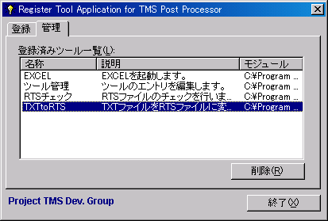
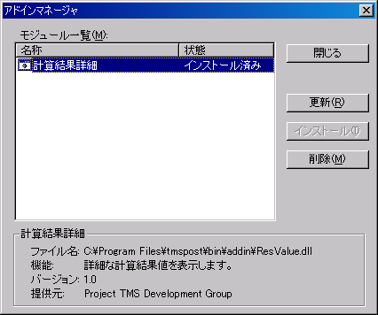

Tms Postのアンインストールは以下の方法で行います。
ツールエントリの削除はツール管理（RegTool）から行います。以下にツールのエントリの削除手順を示します。
- メイン画面メニューの[ツール]−[ツール管理]を選択し、ツール管理（RegTool）を起動します。ツール管理（RegTool）のエントリを登録していない場合には、RegTool.exeを直接実行します。
- 下画面のように{管理}タブを選択し、「登録済みツール一覧」から削除したいツールを選択します。
- ＜削除＞ボタンをクリックすると選択したツールのエントリが削除されます。

アドインの削除はアドインマネージャから行います。
- メイン画面メニューの[アドイン]−[アドインマネージャ]を選択すると、下画面のようなアドインマネージャの画面が表示されます。
- 「モジュール一覧」からインストール済みの削除したいアドインを選択します。
- ＜削除＞ボタンをクリックすると選択したアドインが削除されます。
